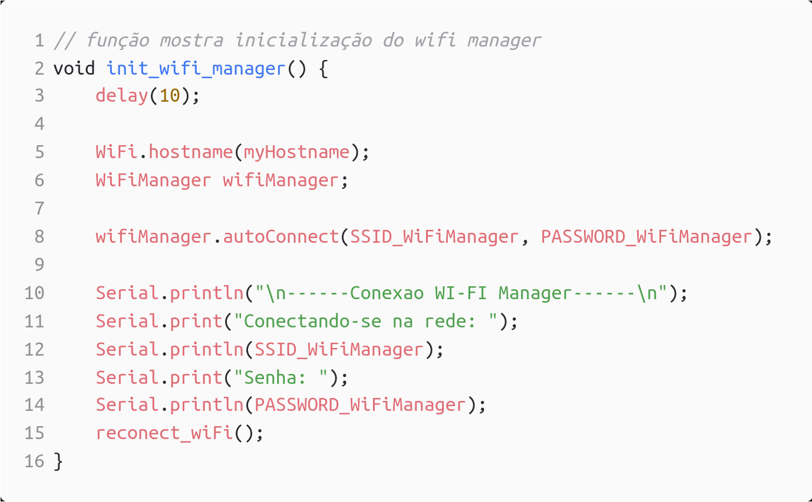

MQTT é um protocolo de comunicação de mensagens leves entre dispositivos, com ele podemos comunicar com dispositivos eles estando conectados a uma rede WiFi em qualquer lugar do mundo, isso torna o protocolo muito utilizado para comunicação entre dispositivos IOT.
Para ultilizar o MQTT, é necessário abri o menu Ferramentas > Gerenciador de Bibliotecas, no campo Refinar sua busca.. buscar por PubSubClient, é possível baixar como na imagem abaixo:
OTA é o processo de enviar, realizar o upload, de firmware para o ESP através de uma conexão WiFi ao invés da porta serial usb, trazendo uma grande diferença no desenvolvimento e atualização do firmware.
Para instalar o OTA no Arduino IDE, é necessário abri o menu Ferramentas > Gerenciador de Bibliotecas, no campo Refinar sua busca.. buscar por ArduinoOTA, e instalar a biblioteca como na imagem abaixo:
O servido MQTT que utilizei é o Eclipse IOT que possui endereço mqtt.eclipseprojects.io e utiliza as portas 1883 e 8883. Com tudo isso teremos isso em nosso programa que utilizará o MQTT:
Essas variáveis serão utilizadas nas funções declaradas abaixo:
O setup, e loop principal de nosso programa será o seguinte:
Primeiro, antes de podermos enviar os programas para o ESP8266, através do OTA, é necessário configurar enviar um programa por cabo para o ESP8266 que adicione ao dispositivo a capacidade de receber programas via WiFi. utilizando o programa feito anteriormente, ja é possível fazer isso apos a definida da funções void initOTA() , void reconectWiFi() e void initWiFi() como abaixo no código:
Repare que na função void initOTA() é definido um hostname, e uma senha nas linhas 31 e 34, eles serão utilizados posteriormente para poder enviar o programa para o ESP8266.
Apos carregado os programa para o ESP8266, enquanto eles estiver ligado e na rede que foi definida sera possível enviar o programa para o ESP8266, selecionado um dispositivo , no menu Ferramentas > Portas > Portas de rede, como na imagem abaixo:
Ao carregar o programa para o ESP8266, sera pedido uma senha que foi definida em código anteriormente, e a senha será utilizada para poder enviar o programa para o ESP8266.
Para que um programa possa usar a comunicação MQTT, é necessário configurar uma rede BROKER, que é um host que recebe as mensagens e as envia para os dispositivos, dar um ID e nome único ao dispositivo dento da rede broker, uma senha e um tópico que divide de onde o dispositivo irar receber as mensagens. Os dispositivos podem tanto publica mensagens para o broker, como receber mensagens do broker, através da biblioteca PubSubClient podemos configurar o ESP8266 para receber ou enviar mensagens do broker.

Observemos que dentro da função mqtt_callback(char* topic, byte* payload, unsigned int length) podemos receber o tópico, o payload e o tamanho da mensagem. utilizaremos ela posteriormente para receber as mensagens do broker.
MQTT Dashboard torna o celular em um dispositivo capaz de enviar e receber mensagens do broker MQTT,a instalação do MQTT Dashboard foi simples, foi baixado e instalado através da Google Play Store, como na imagem abaixo:

Apos a instalação e configuração do MQTT Dashboard, é possível utilizar o MQTT Dashboard para enviar e receber mensagens do broker MQTT.
Agora com essas funções definidas, é possível enviar e receber mensagens do broker. então vamos criar um programa que acende um led a cada vez que receber uma mensagem do broker. Para isso teremos que fazer algumas modificações em nosso programa, como abaixo:

No MQTT Dashboard, vamos criar um novo dispositivo, com o nome ESP8266_LED, e a senha 12345678, e um botão que posta um playload para o tópico ESP8266_LED/LED, como na imagem abaixo:

ao ser clicado o botão o payload,LED - TOGGLE, será recebido pelo ESP8266, e o LED será acionado, imagens do funcionamento no final.
Primeiro vamos começar com o Wifi Manager e OTA, vamos começar do programa base a baixo:
Agora vamos definir as funções, void init_wifi_manager();, void reconect_wiFi(); e void initOTA();.
void init_wifi_manager();

void reconect_wiFi();
Observe que dentro da função reconect_wiFi() estamos utilizando o wifi manager para reconectar a rede, caso o ESP8266 não esteja conectado a rede.
void initOTA();.
Dentro das funções void setup() e void loop() teremos:
Ao executar o programa o ESP8266 irá iniciar o Wifi Manager, e irá pedir uma senha para conectar a rede, caso o ESP8266 não esteja conectado a rede. No monitor serial, podemos ver essa saída apos a conexão com a rede:
É claro que se o programa for feito para um fim comercial, essa senha não seria mostrada.
É necessário adicionar algumas variáveis globais, como na imagem abaixo:
Agora iremos adicionar uma função com o mqtt, para isso o programa será modificado como abaixo:
void initMQTT()
void mqtt_callback(char* topic, byte* payload, unsigned int length)
void VerificaConexoesMQTT(void)
Apos tudo isso possuímos um programa que irá enviar e receber mensagens do broker MQTT, e acender um led ao mesmo tempo que possui as capacidades do Wifi Manager e OTA.
Imagens funcionamento: